Clocks
In our world we have digital clocks (they have digits like 0,1,2,3) ...
 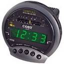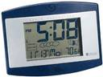
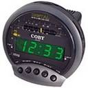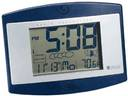
... and analog clocks (they have hands) ...
 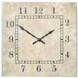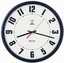
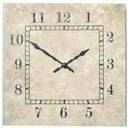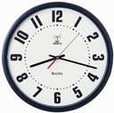
Digital Clocks
Digital Clocks show us the time using numbers, like this:
Hours : Minutes
Examples:
| 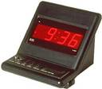 |
||
|
5 Hours and 8 Minutes
|
9 Hours and 36 Minutes
|
Clocks with Hands
Clocks can also use hands to show us the Hours and Minutes. We call them "analog" clocks.
The Little Hand shows the Hours:
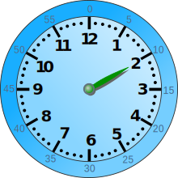
2 Hours
2 Hours
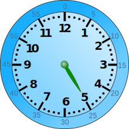
5 Hours
5 Hours
The Big Hand shows the Minutes:
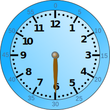
30 Minutes
30 Minutes
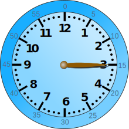
15 Minutes
15 Minutes
Using both the Big Hand and Little Hand lets us know exactly what time it is:

2:30 or
Half-Past Two
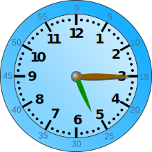
5:15 or
Quarter-Past Five
5:15 or
Quarter-Past Five
Practice
Now you can:
- practice using these Time Worksheets, or
- play with the two types of clock using the Analog and Digital Clock Animation
1964, 1965, 1966, 1967, 1968, 1969, 3646, 3647, 3648, 3649